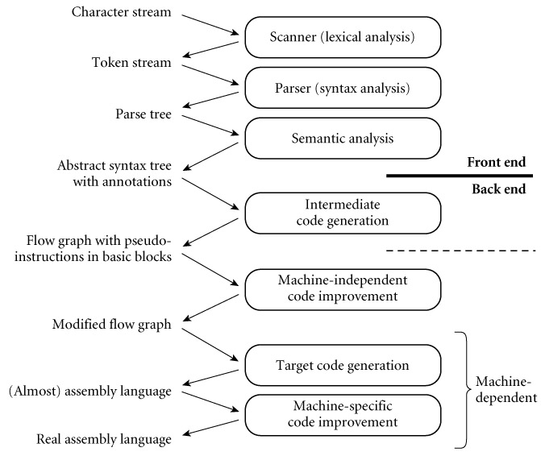
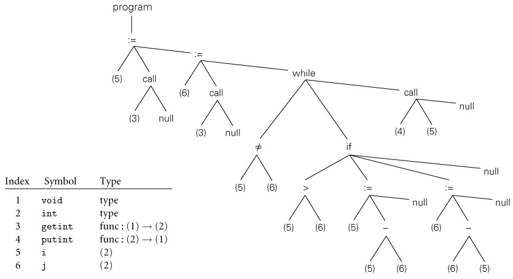

|
|
|
|
14.1 Back-End Compiler Structure
As we noted in Chapter 4, there is less uniformity in back-end compiler
structure than there is in front-end structure. Even such unconventional
compilers as text processors, source-to-source translators, and VLSI layout tools
must scan, parse, and analyze the semantics of their input. When it comes to
the back end, however, even compilers for the same language on the same machine
can have very different internal structure.
As we shall see in Section 14.2, different compilers may use different
intermediate forms to represent a program internally. Depending on the
preferences of the programmers building a compiler, the constraints under which
those programmers are working, and the expected user community, compilers may also
differ dramatically in the forms of code improvement they perform. A simple
compiler, or one designed for speed of compilation rather than speed of target
code execution (e.g., a "just-in-time" compiler) may not do much
improvement at all. A just-in-time or "load-and-go" compiler (one
that compiles and then executes a program as a single high-level operation,
without writing the target code to a file) may not use a separate linker. In
many compilers, much or all of the code generator may be written automatically
by a tool (a "code generator generator") that takes a formal
description of the target machine as input.
14.1.1 A Plausible Set of Phases
Example 14.1: Phases of
compilation
|
|
Figure
14.1 illustrates a plausible seven-phase structure for a conventional
compiler. The first three phases (scanning, parsing, and semantic analysis) are
language dependent; the last two (target code generation and machine specific
code improvement) are machine dependent, and the middle two (intermediate code
generation and machine-independent code improvement) are (to first
approximation) dependent on neither the language nor the machine. The scanner
and parser drive a set of action routines that build a syntax tree. The
semantic analyzer traverses the tree, performing all static semantic checks and
initializing various attributes (mainly symbol table pointers and indications
of the need for dynamic checks) of use to the back end.

Figure 14.1: A plausible structure
for the compiler back end.
Here we have shown a sharper separation between semantic analysis and
intermediate code generation than we considered in Chapter 1 (see Figure 1.3, page 26). Machine-independent code improvement
employs an intermediate form that resembles the assembly language for an
idealized machine with an unlimited number of registers. Machine-specific code
improvement―register allocation and instruction scheduling in
particular―employs the assembly language of the target machine. The dashed line
shows a common alternative "break point" between the front end and
back end of a two-pass compiler. In some implementations, machine-independent
code improvement may be located in a separate "middle end" pass.
|
|
While certain code improvements can be performed on syntax
trees, a less hierarchical representation of the program makes most code
improvement easier. Our example compiler therefore includes an explicit phase for
intermediate code generation. The code generator begins by grouping the nodes
of the tree into basic blocks, each of which consists of a
maximal-length set of operations that should execute sequentially at run time,
with no branches in or out. It then creates a control flow graph in
which the nodes are basic blocks and the arcs represent interblock control
flow. Within each basic block, operations are represented as instructions for
an idealized RISC machine with an unlimited number of registers. We will call
these virtual registers. By allocating a new one for every computed
value, the compiler can avoid creating artificial connections between otherwise
independent computations too early in the compilation process.
Example 14.2: GCD
program abstract syntax tree (reprise)
|
|
In Section 1.6 we used a simple greatest common divisor (GCD)
program (source code on page 27) to illustrate the phases of compilation. The
syntax tree for this program appeared in Figure 1.5; it is reproduced here (in slightly altered form) as Figure
14.2. A corresponding control flow graph appears in Figure
14.3. We will discuss techniques to generate this graph in Section
14.3 and Exercise 14.6. Additional examples of control flow graphs
will appear in Chapter 16.

Figure 14.2: Syntax tree and symbol
table for the GCD program.
The only difference from Figure 1.5 is the addition of explicit null nodes to
indicate empty argument lists and to terminate statement lists.
Figure 14.3: Control flow graph for
the GCD program.
Code within basic blocks is shown in the pseudo-assembly notation introduced on
page 214, with a different virtual register (here named v1…v13) for every computed value. Registers a1 and rv are used
to pass values to and from subroutines.
|
|
The second phase of the back end, machine-independent code
improvement, performs a variety of transformations on the control flow graph.
It modifies the instruction sequence within each basic block to eliminate
redundant loads, stores, and arithmetic computations; this is local code
improvement. It also identifies and removes a variety of redundancies
across the boundaries between basic blocks within a subroutine; this is global
code improvement. As an example of the latter, an expression whose value is
computed immediately before an if statement need not be recomputed within the code that
follows the else.
Likewise an expression that appears within the body of a loop need only be evaluated
once if its value will not change in subsequent iterations. Some global
improvements change the number of basic blocks and/or the arcs among them.
It is worth noting that "global" code improvement
typically considers only the current subroutine, not the program as a whole.
Much recent research in compiler technology has been aimed at "truly
global" techniques, known as interprocedural code improvement.
Since programmers are generally unwilling to give up separate compilation
(recompiling hundreds of thousands of lines of code is a very time-consuming
operation), a practical interprocedural code improver must do much of its work
at link time. One of the (many) challenges to be overcome is to develop a
division of labor and an intermediate representation that allow the compiler to
do as much work as possible during (separate) compilation, but leave enough of
the details undecided that the link-time code improver is able to do its job.
Following machine-independent code improvement, the next
phase of compilation is target code generation. This phase strings the basic
blocks together into a linear program, translating each block into the
instruction set of the target machine and generating branch instructions (or
"fall-throughs") that correspond to the arcs of the control flow
graph. The output of this phase differs from real assembly language primarily
in its continued reliance on virtual registers. So long as the
pseudoinstructions of the intermediate form are reasonably close to those of
the target machine, this phase of compilation, though tedious, is more or less
straightforward.
To reduce programmer effort and increase the ease with which
a compiler can be ported to a new target machine, target code generators are
often generated automatically from a formal description of the machine.
Automatically generated code generators all rely on some sort of
pattern-matching algorithm to replace sequences of
intermediate code instructions with equivalent sequences of target machine instructions.
References to several such algorithms can be found in the Bibliographic Notes
at the end of this chapter; details are beyond the scope of this book.
On the CD The final phase of our example compiler structure
consists of register allocation and instruction scheduling, both of which can
be thought of as machine-specific code improvement. Register allocation
requires that we map the unlimited virtual registers employed in earlier phases
onto the bounded set of architectural registers available in the target
machine. If there aren't enough architectural registers to go around, we may
need to generate additional loads and stores to multiplex a given architectural
register among two or more virtual registers. Instruction scheduling (described
in Sections 5.5 and 16.6) consists of reordering the instructions of each basic
block in an attempt to fill the pipeline(s) of the target machine.
In Section 1.6 we defined a pass of compilation as a
phase or sequence of phases that is serialized with respect to the rest of
compilation: it does not start until previous phases have completed, and it
finishes before any subsequent phases start. If desired, a pass may be written
as a separate program, reading its input from a file and writing its output to
a file. Two-pass compilers are particularly common. They may be divided between
the front end and the back end (i.e., between semantic analysis and
intermediate code generation) or between intermediate code generation and
global code improvement. In the latter case, the first pass is still commonly
referred to as the front end and the second pass as the back end.
Like most compilers, our example generates symbolic assembly
language as its output (a few compilers, including those written by IBM for the
PowerPC, generate binary machine code directly). The assembler (not shown in Figure
14.1) behaves as an extra pass, assigning addresses to fragments of data
and code, and translating symbolic operations into their binary encodings. In
most cases, the input to the compiler will have consisted of source code for a
single compilation unit. After assembly, the output will need to be linked
to other fragments of the application, and to various preexisting subroutine
libraries. Some of the work of linking may be delayed until load time
(immediately prior to program execution) or even until run time (during program
execution). We will discuss assembly and linking in Sections 14.5 through 14.7.